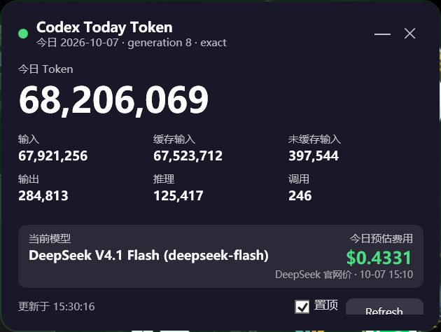

Codex Today Token Widget
常驻桌面小部件：显示今日 Token、当前模型、官网价格与今日预估费用，并提供托盘图标。

功能
- 今日 Token 总量、输入、缓存输入、未缓存输入、输出、推理和调用次数。
- 自动检测当前模型，例如
deepseek-flash。 - 按 DeepSeek 官网峰谷价估算今日费用。
- 窗口不显示在任务栏，最小化和关闭都隐藏到托盘。
- 托盘菜单：显示/隐藏、刷新、更新价格、退出。窗口右下角只保留一个 Refresh 按钮。
- Windows 11 可能把图标放在右下角 ^ 折叠区；拖出来一次即可固定。
前置条件
- Windows 10/11。
- Windows PowerShell 5.1 和 .NET WPF（系统自带）。
- 支持插件与 Hooks 的 Codex Desktop/CLI，并启用
[features] hooks = true。 - 安装 Codex Usage Tracker，并确保
codex-usage-tracker.exe在 PATH 中。 - Codex Usage Tracker 运行环境需要 Python 3.10+；推荐用 pipx 隔离安装。其插件流程还需要 Node.js 22+ 和 npm。
- 首次运行需要执行
codex-usage-tracker setup和codex-usage-tracker refresh --wait 30。 - 更新官网价格时需要访问 DeepSeek 价格页和中国政府节假日通知；离线可直接使用包内 JSON。
- 本小部件不需要 API Key，只读取本地 Codex 会话数据。
- 当前官方价格表覆盖
deepseek-flash和deepseek-v4-pro。
官网价格来源
高峰时段为 UTC 01:00-04:00、06:00-10:00（周一至周五）。周末和中国法定节假日全天按低谷价。当前 2026 年节假日表已内置。
快速使用
| 操作 | 文件 |
|---|---|
| 手动启动小部件 | Launch-TokenUsageWidget.cmd |
| 更新官网价格 | Update-Pricing.ps1 |
| 安装 Codex 启动钩子 | Install-Codex-Hook.cmd |
| 卸载 Codex 启动钩子 | Uninstall-Codex-Hook.cmd |
Codex 启动时自动运行
安装 token-widget-launcher 后，Codex 会要求一次 Hooks 信任确认。点击 Trust all and continue 后，打开 Codex 会自动启动小部件；已经运行则不会重复启动。